import IPython.display as ipd
ipd.Image("img/2017_Uhlich_et_al_Fig1.PNG", width=300)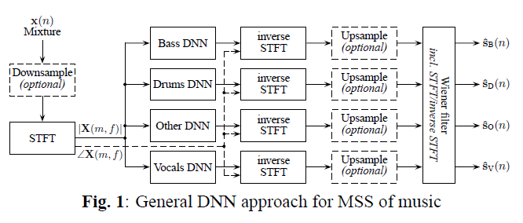
Literatures - Music Source Separation
Cheonghyo Cho
February 24, 2023
MIR Literatures - Music Source Separation
이론보다는 실증 연구를 바탕으로 선행연구들을 직접 조사하였다. 또한 음성(speech) 보다는 음악이 포함된 소스 분리 위주의 연구로 조사하였다. 논문은 연도 순으로 정리되어 있으며, 연구에서 쓰이는 데이터, 피쳐, 모형, 성과지표를 함께 게재하였다. 각각 항목에 따라 주로 사용되는 것과 시간에 따른 추세를 확인할 수 있다. 논문(저자,연도)을 클릭하면 해당 논문의 제목이 나와있는 DOI 주소로 이동한다.
2022년까지
| 논문 | 데이터 | 피쳐/인풋 | 모형 | 성과지표 |
|---|---|---|---|---|
| M. Spiertz and V. Gnann (2009) | EBU speech, Instruments Data | Spectrogram, MFCC | MFCC K-means, NMF | SAR, SDR, SIR, SER |
| G. Mysore, P. Smaragdis, and B. Raj (2010) | TIMIT speech | Spectrogram | Non-negative Factorial HMM | SAR, SDR, SIR |
| R. Jaiswal, et, al. (2011) | Orchestral Instruments | Spectrogram | Shifted-NMF | SAR, SDR, SIR |
| E. Grais, M.U. Sen, and H. Erdogan (2014) | TIMIT speech, Piano data | Spectrogram | DNN, Energy Minimization | SNR, SDR, SIR |
| J. Le Roux, et al. (2015) | WSJ-0(speech) | Spectrogram | DeepNMF | SDR, SNR |
| S. Uhlich, F. Giron, and Y. Mitsufuji (2015) | TRIOS (“Brahms”,“Lussier”) | Spectrogram | DNN(FNN) | SAR, SDR, SIR |
| A.A. Nugraha, A. Liutkus, and E. Vincent (2016) | SISEC 2015 dataset | Spectrogram | DNN + Wiener filter | SAR, SDR, SIR, ISR |
| A. Jansson, et al. (2017) | Train: Large (original, instrumental) songs , Test:iKala, MedleyDB | Spectrogram | U-Net | SAR, NSDR, SIR |
| P. Chandna, et al. (2017) | DSD100 | Spectrogram | DeepConvSep (CNN-based) | SAR, SDR, SIR, ISR |
| Y. Luo, et al. (2017) | DSD100-remix, iKala | Spectrogram | Chimera(Deep clustering, Bi-LSTM) | SDR |
| S. Uhlich, et al. (2017) | DSD100 | Spectrogram | BLEND(FNN(feed-forward) + Bi-LSTM) | SDR |
| N. Takahashi and Y. Mitsufuji (2017) | DSD100 | Spectrogram | MM(Multiscale Multiband)DenseNet | SDR |
| D. Stoller, S. Ewert, and S. Dixon (2018) | MUSDB18 | Waveform | Wave-U-Net | SDR statistics |
| S. Park, T. Kim, K. Lee, and N. Kwak (2018) | DSD100 | Spectrogram | Stacked Hourglass Network(CNN-based) | Median SDR |
| J.Y. Liu and Y.H. Yang (2018) | MUSDB18, DSD100 | Spectrogram | ARC(Auto-encoder with Recurrent skip Connections) aka Spect U-Net | SDR |
| N. Takahashi, N. Goswami, and Y. Mitsufuji (2018) | MUSDB18, DSD100 | Spectrogram | MMDenseLSTM | SDR |
| F. Lluís, J. Pons, and X. Serra (2018) | MUSDB18 | Waveform | Wave-Net | SAR, SDR, SIR |
| J.Y. Liu and Y.H. Yang (2019) | MUSDB18 | Spectrogram | Dilated GRU | SDR |
| F. Stöter, S. Uhlich, A. Liutkus, and Y. Mitsufuji (2019) | MUSDB18, MUSDB18-HQ | Spectrogram | Open-Unmix (based on S. Uhlich, et al. (2017)) | SDR |
| L. Prétet, et al. (2019) | Bean + MUSDB18 | Spectrogram | U-Net | SAR, SDR, SIR |
| Y. Luo and N. Mesgarani (2019) | WSJ0-2MIX (speech) | Waveform | Conv-TasNet | SI-SNR, SDR |
| A. Défossez, et al.(2019) | MUSDB18 | Waveform | Demucs | SDR |
| R. Hennequin, et al. (2020) | Train: Bean + Extra , Test: MUSDB18 | Spectrogram | Spleeter (based on U-Net, L. Prétet, et al. (2019)) | SAR, SDR, SIR, ISR |
| Y. Luo, et al. (2020) | WSJ0-2MIX (speech) | Spectrogram | DP(Dual-Path)RNN | SI-SNR, SDR |
| E. Nachmani, Y. Adi, and L. Wolf (2020) | MUSDB18, WSJ0-2MIX (speech) | Spectrogram | DPRNN-based | SDR |
| D. Samuel and A. Ganeshan (2020) | MUSDB18 | Waveform + Spectrogram | Meta-TasNet (meta-learning of ConvTasNet) | SI-SNR, SDR |
| N. Takahashi and Y. Mitsufuji (2020) | MUSDB18 | Spectrogram | D3Net (multidilated convolution) | SDR |
| E. Lancaster, and N. Souviraà-Labastie (2020) | MUSDB18+ Extra 30 | Waveform | TasNet | SI-SNR, SDR |
| W. Choi, et al. (2020) | MUSDB18-HQ | Spectrogram | LaSAFT-GPoCM (Latent Source Attentive Frequency Transformation Gated Point-wise Convolutional Modulation) | SDR |
| T. Li, et al. (2021) | MUSDB18 | Spectrogram | Sams-Net (Sliced Attention-based Neural Network) | SDR |
| X. Song, et al. (2021) | MUSDB18 | Waveform + Spectrogram | CatNet | SDR |
| Q. Kong, et al. (2021) | MUSDB18 | Spectrogram | ResUNet (Residual UNet) | SDR |
| R. Sawata, et al. (2021) | MUSDB18 | Waveform + Spectrogram | CrossNet-UnMiX (X-UMX) (multi-domain loss, combination loss) | SDR |
| H. Liu, Q. Kong, and J. Liu (2021) | MUSDB18-HQ | Spectrogram | CWS-PResUNet (channel-wise subband phase-aware ResUNet), ByteMSS (CWS-PResUNet+DeMucs) | SDR |
| A. Défossez (2021) | MUSDB18-HQ | Waveform + Spectrogram | Hybrid Demucs | nSDR |
| M. Kim, et al. (2021) | MUSDB18 | Waveform + Spectrogram | KUIELab-MDX-Net (two-stream neural network) | SDR |
| Y. Luo and J. Yu (2022) | MUSDB18, MUSDB18-HQ | Spectrogram | Band-Split RNN | uSDR, cSDR |
| Y. Hu, et al. (2022) | MUSDB18 | Waveform + Spectrogram | CDE-HTCN (cross-domain encoder hierarchic temporal convolutional network) | SDR |
MSS(music source separation) 방법은 사용하는 인풋(input)에 따라 크게 두가지 유형으로 나눌 수 있다. 스펙트로그램(spectrogram) 도메인 그리고 시간(time) 도메인(혹은 파형(waveform) 도메인) 이다. 최근에는 두가지를 합친 모형이 많이 사용된다.
Spectrogram은 STFT(short-time Fourier transform)로 계산한 time-frequency 표현이다. 인풋으로는 주로 소스가 믹스된 spectrogram magnitude가 사용된다. 다음 각 소스에 마스킹을 통해 spectrogram magnitude를 추정, I(inverse)STFT를 통해 재건하는 방식을 취하는 것이 일반적이다. STFT의 파라미터는 윈도우 유형, 윈도우 크기, 홉 크기 등이 있다. 연구들에서 윈도우는 주로 “Hann”, “Hamming”을, 윈도우 크기와 홉 크기의 조합은 주로 (1024, 256), (2048, 441), (2048, 512)등이 사용되었다.
간단한 DNN 구조에 사용되는 STFT 예시 (Uhlich, et al. (2017) Figure 1)
후처리(post-processing)
MSS에 딥러닝이 본격적으로 사용되기 전에 주로 사용되던 방법이다. 특히 음악 소스 분리 이전 음성 분리에 많이 사용되었다. 자세한 설명
NMF 기반의 모형 중 Shifted-NMF, Sparse NMF(sparsity factor 추가), Descriminative NMF(discriminative cost function 추가), 혹은 DNN을 혼합한 DeepNMF 같은 모형이 사용되었다.
딥러닝(deep learning)의 발달로 기존의 비지도(unsupervised) 학습 방법에서 지도(supervised) 학습 방법의 MSS가 추세가 되었다.
FNN 예시 (Uhlich, et al. (2017) Figure 2(a))
BiLSTM 예시 (Uhlich, et al. (2017) Figure 2(b))
U-Net 구조 (Jansson, et al. (2017) Figure 1)
Wave-U-Net 구조 (Stoller et al (2018) Figure 1)
DeepConvSep 구조 (Chandna, et al. (2017) Figure 2)
ipd.display(ipd.Image("img/2017_Takahashi_Fig1.PNG", width=300))
ipd.display(ipd.Image("img/2017_Takahashi_Fig2.PNG", width=300))
ipd.display(ipd.Image("img/2017_Takahashi_Fig3.PNG", width=300))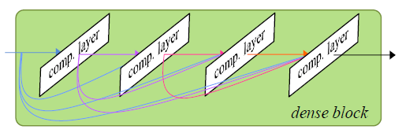
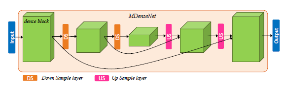
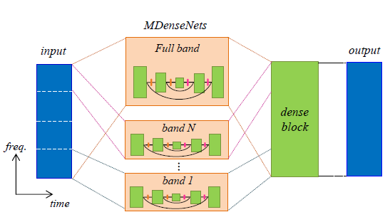
위에서부터 DenseNet의 dense block, Multi-scale DenseNet, Multi-band MDenseNet (Takahashi and Mitsufuji (2017) Figure 1,2,3)
ipd.display(ipd.Image("img/2018_Takahashi_etal_fig2.PNG", width=300))
ipd.display(ipd.Image("img/2018_Takahashi_etal_fig3.PNG", width=300))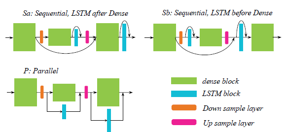
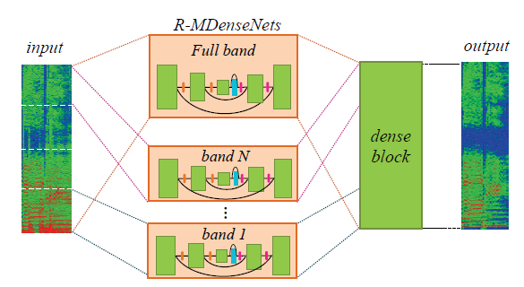
위에서부터 DenseLSTM의 dense&LSTM block, MMDenseLSTM (Takahashi et al (2018) Figure 2,3)
ARC 구조 (Liu and Yang (2018) Figure 1)
ipd.display(ipd.Image("img/2019_Liu_Yang_Fig2a.PNG", width=300))
ipd.display(ipd.Image("img/2019_Liu_Yang_Fig4.PNG", width=200))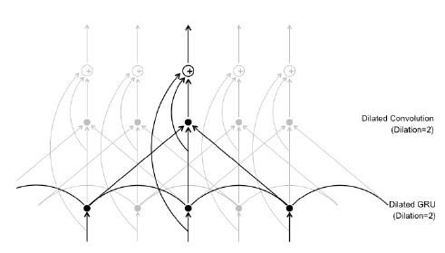
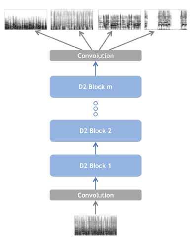
위에서부터 D2 Block(Dilated GRU convolution block), 제안 모형 (Liu and Yang (2019) Figure 2b,4)
ipd.display(ipd.Image("img/2018_Park_fig1.PNG", width=250))
ipd.display(ipd.Image("img/2018_Park_fig2.PNG", width=250))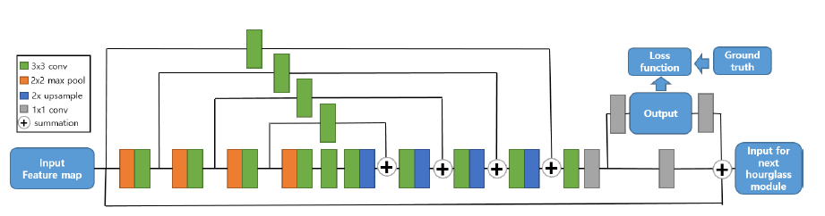
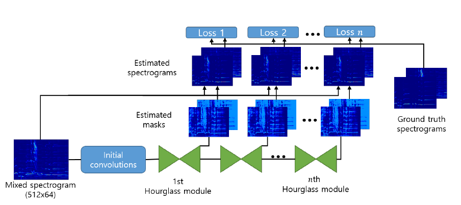
위에서부터 hourglass 모듈, Stacked-Hourglass-Networks (Park et al (2018) Figure 1,2)
ipd.display(ipd.Image("img/2019_Luo_Fig1a.PNG", width=300))
ipd.display(ipd.Image("img/2019_Luo_Fig2.PNG", width=300))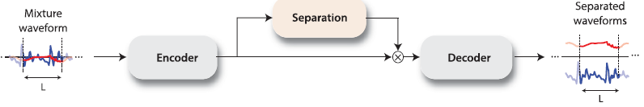
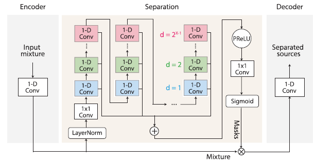
ConvTasNet구조 (Luo and Mesgarani (2019) Figure 1a, 2)
ipd.display(ipd.Image("img/2020_Samuel_Fig1.PNG", width=300))
ipd.display(ipd.Image("img/2020_Samuel_Fig2.PNG", width=200))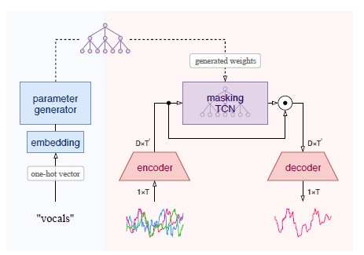
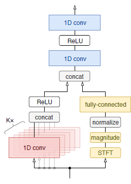
Meta-TasNet구조, endoder구조 (Samuel and Ganeshan (2020) Figure 1, 2)
ipd.display(ipd.Image("img/2019_Defossez_Fig2a.PNG", width=200))
ipd.display(ipd.Image("img/2019_Defossez_Fig2b.PNG", width=200))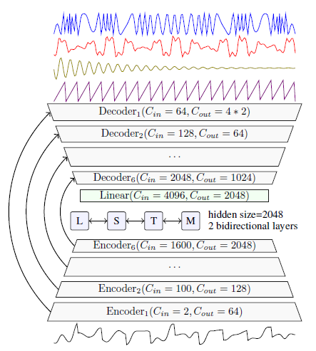
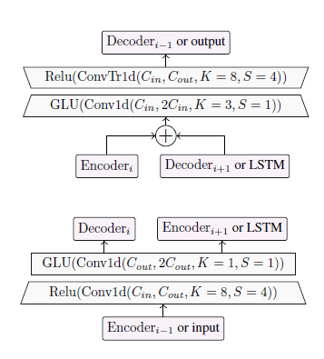
Demucs 구조 (Defossez et al. (2019) Figure 2)
Hybrid-Demucs 구조 (Defossez (2021) Figure 1)
Multi-dilated convolution (Takahashi and Mitsufugi (2020) Figure 2(b))
ipd.display(ipd.Image("img/2020_Choi_Fig1.PNG", width=300))
ipd.display(ipd.Image("img/2020_Choi_Fig2.PNG", width=300))
ipd.display(ipd.Image("img/2020_Choi_Fig3.PNG", width=300))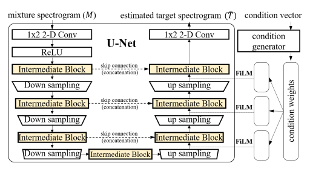
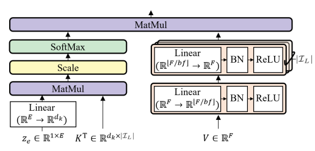
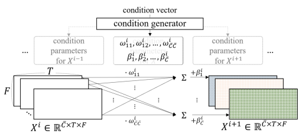
위에서부터 Conditioned U-Net 구조, LaSAFT, GPoCM (Choi et al. (2020) Figure 1, 2, 3)
ipd.display(ipd.Image("img/2021_Li_FIg1.PNG", width=200))
ipd.display(ipd.Image("img/2021_Li_FIg3.PNG", width=200))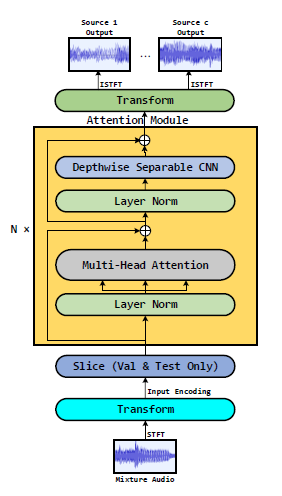
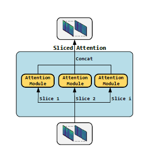
Sams-Net 구조와 sliced attention (Li et al. (2021) Figure 2, 3)
X-UMX 구조 (Sawata et al. (2021) Figure 3(b))
Residual Blocks (Kong et al. (2021) Figure 3)
PResUNet (Liu et al. (2021) Figure 2)
ipd.display(ipd.Image("img/2022_Hu_Fig1.PNG", width=300))
ipd.display(ipd.Image("img/2022_Hu_Fig2.PNG", width=300))
ipd.display(ipd.Image("img/2022_Hu_Fig3b.PNG", width=200))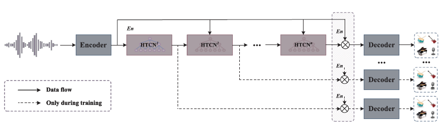
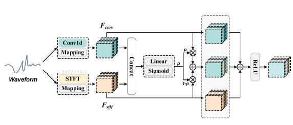
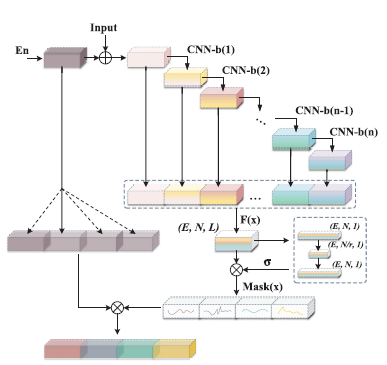
위에서부터 CDE-HTCN 구조, CDE 구조, HTCN(with FCU) 구조 (Hu et al. (2022) Figure 1, 2, 3(b))
Hu et al. (2022) Table II
DSD100: MUSDB18이 등장하기 전 2016년 SiSEC Mus 2016 컴피티션 이후 많이 사용된 음악 데이터 세트이다. 각 트랙은 보컬, 드럼, 베이스, 기타(others)로 분류되며 주석이 달려있다. 총 100곡으로 이루어져 있다.
MUSDB18: 2018년 SiSEC Mus 2018 컴피티션 이후 연구에서 가장 많이 사용되는 음악 데이터 세트이다. 각 트랙은 보컬, 드럼, 베이스, 기타(others)로 분류되며 주석이 달려있다. 총 100곡으로 이루어져 있으며, 제시된 훈련 세트는 86개, 검증 세트는 14개, 테스트 세트는 50개이다. 하지만 연구에 따라 다르게 설정하며, 훈련을 다른 데이터를 추가하는 등 사용하는 방법은 다 다르다.
인풋으로 스펙트로그램 위주로 사용하다가 시간도메인의 파형을 사용하는 모형이 생기며, 이를 혼합하여 사용하게 되는 흐름을 볼 수 있다.
NMF 모형에서 시작하여 딥러닝의 발전으로 CNN기반, RNN기반의 모형이 생겨났으며, 이미지 등의 분야에서 쓰이던 U-Net, DenseNet, TasNet 등의 구조를 기반으로 응용된 모형들이 생겨났다. CNN과 함께 LSTM을 활용하고, Attention 기반의 모형을 활용하는 등의 발전 흐름도 볼 수 있다.
추가로 논문 저자들을 보면 어느 회사의 연구원들을 위주로 모형을 발달시켜가는 경우를 볼 수 있다. 유명한 오픈소스 모형인 Open-Unmix의 경우 Sony, Demucs는 Facebook, Spleeter는 Deezer의 연구원들이 참여하였다.